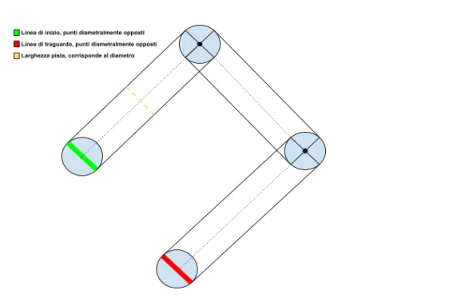

Java · progettazione orientata agli oggetti
Simulatore di corse Vector Rally
Un gioco di corse a turni da console, con circuiti configurabili, piloti automatici e controlli su traiettorie e collisioni.
Panoramica
Vector Rally è un gioco di corse da console basato su movimenti su una griglia. A ogni turno si scelgono direzione e velocità; il gioco controlla che la traiettoria resti in pista e non provochi collisioni.
Il progetto separa il motore di gara dal parser dei circuiti, dalla gestione delle regole e dal controllo delle collisioni. In questo modo è possibile aggiungere nuovi circuiti e tipi di giocatore senza riscrivere l’intero gioco.
Il mio contributo
- Ho realizzato la struttura del gioco in Java e la build Gradle.
- Ho aggiunto un parser per caricare i circuiti da file di testo, così da modificarli senza intervenire sul motore di gara.
- Ho implementato piloti automatici con strategie di velocità assegnate casualmente.
- Ho suddiviso le traiettorie in punti interi e verificato i limiti del circuito e le collisioni lungo il percorso.
Come funziona
Il parser converte il circuito testuale nella struttura usata dal gioco. Il motore fa avanzare i piloti a turno, mentre l’arbitro applica l’ordine di partenza e le regole della gara.
I piloti automatici usano strategie di velocità assegnate. Prima di accettare una mossa, il gioco controlla lungo la traiettoria che non ci siano punti fuori pista o collisioni.
Decisioni chiave
Separare le regole dal ciclo di gara
Scelta: Mantenere distinti arbitro, controllo delle collisioni, parser e motore di gara.
Motivazione: La separazione rende le regole più comprensibili e facilita l’aggiunta di altri tipi di giocatore.
Compromesso: I componenti devono avere interfacce chiare, così che le regole siano applicate in modo coerente.
Rappresentare il movimento come una sequenza di punti
Scelta: Suddividere ogni mossa in punti interi lungo la traiettoria prima di verificarla rispetto al circuito.
Motivazione: Controllare anche i punti intermedi permette di rilevare l’attraversamento del bordo o di un’altra vettura, anche quando la destinazione sembra valida.
Compromesso: È un modello di gioco discreto e non simula la fisica continua dei veicoli.
Caricare i circuiti da file di testo
Scelta: Interpretare circuiti configurabili invece di codificare un solo tracciato nel programma.
Motivazione: In questo modo è più facile provare nuovi percorsi e tenere separata la progettazione dei circuiti dalla logica di gioco.
Compromesso: Il parser deve gestire in modo chiaro i file malformati o incoerenti.
Risultati
L’applicazione console supporta circuiti personalizzati e gare con piloti automatici.
Un bozzetto del tracciato mostra come le idee sui percorsi abbiano contribuito alla progettazione.
Limiti e sviluppi futuri
Il gioco si concentra sulle regole dei percorsi a turni, non sulla fisica dei veicoli; anche le strategie dei piloti automatici sono volutamente semplici.
Come passo successivo, aggiungerei l’input per giocatori umani, strategie automatiche più varie e test sui casi limite del parser e dei controlli di collisione.
Immagini del progetto
Seleziona un’immagine per ingrandirla.


Strumenti e metodi
Il bozzetto del circuito proviene dal materiale del progetto. Nel repository sono disponibili il codice sorgente e i file di build.
Visualizza il progetto su GitHub (si apre in una nuova scheda)